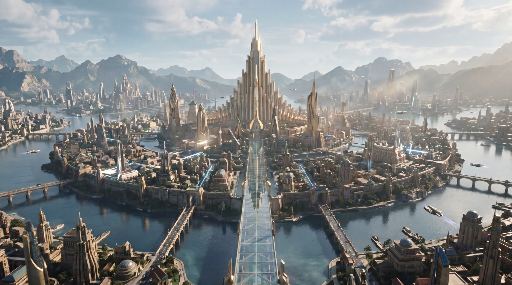
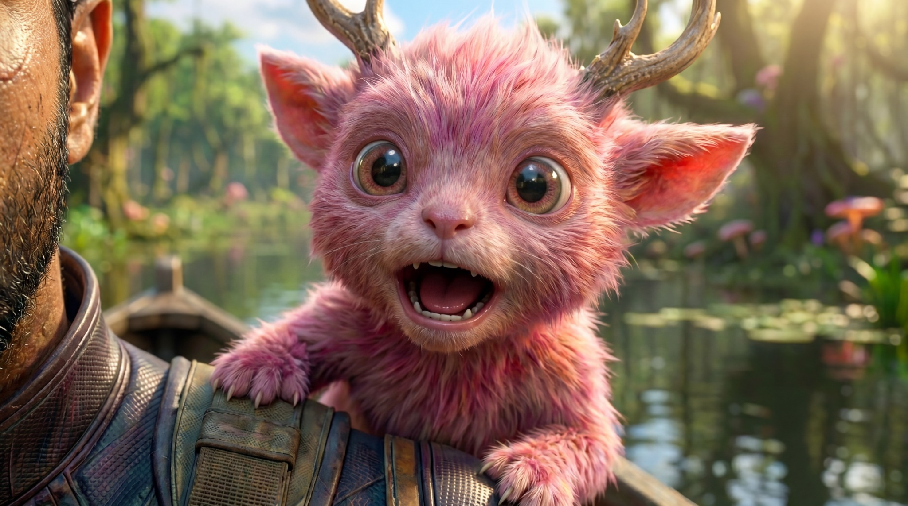
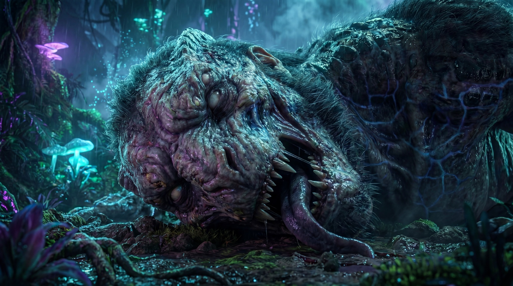
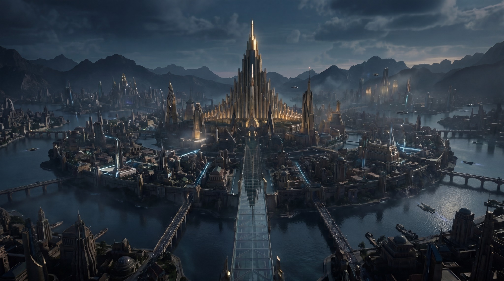

01ENVIRONMENT DESIGN
↗Empire of Light
A monumental waterfront fantasy capital with a towering central palace and layered architecture.
SELECTED AI ARTWORKS · 2026
A selection of AI-generated scenes, characters and environments exploring cinematic storytelling, creature design and fantasy world-building.

01
02
03
04Concept development · Prompt engineering · Visual composition · AI image generation
AI image generation platform: Higgsfield · Model: Nano Banana Pro